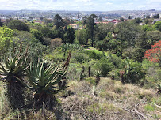
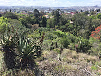

Top 5 Attractions
- National Arts Festival
- 1820 Settlers Monument
- Museum
- Botanical Gardens
- The Cathedral
The national arts festival runs every June, showcasing creative talents in Makhanda.
Click here for more info
A building that represents the ships that the 1820s settlers came on. Every Rhodes student's
journey begins and ends at the Monument with the exception of covid students.
This Museum is held in 7 different buildings. It is the second oldest Museum in South Africa.
You can have a coffee in an old prison cell if you're into that sort of thing.
A place to embrace the beautiful fauna and flora of Grahamstown.
Or if you're looking for a fun Saturday morning activity, there is the Parkrun.
Click here
for more info.


One of Makhanda great architecture. It is the cathedral of Saint Michael and Saint George.
Founded by John Armstrong. It is also the tallest building in the area and has the tallest spire in South Africa.